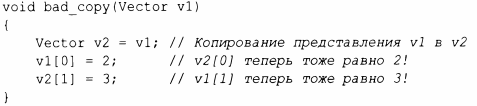
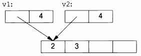
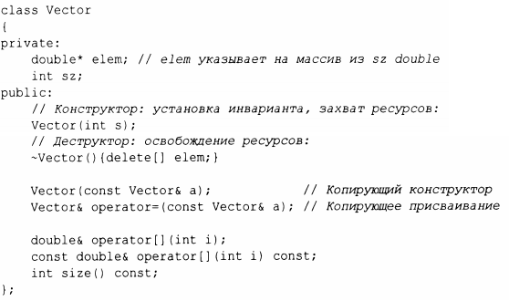
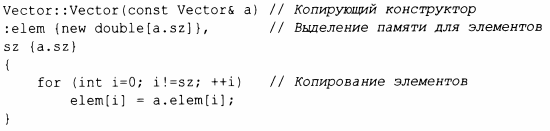
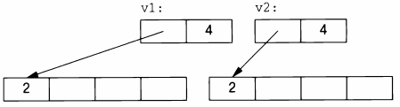
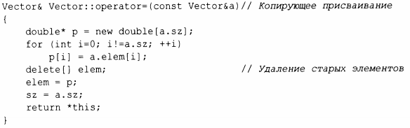

⇐5.2 Копирование и перемещение 5.2.2 Перемещение контейнеров⇒
Когда класс является дескриптором ресурса, т.е. отвечает за объект, доступ к которому осуществляется через указатель, почленное копирование по умолчанию обычно оказывается катастрофой. Почленная копия будет нарушать инвариант дескриптора ресурса (§3.5.2). Например, копирование по умолчанию создало бы копию Vector, ссылающуюся на те же элементы, что и оригинал:
В предположении, что vl имеет четыре элемента, графически результат может быть представлен следующим образом.
К счастью, тот факт, что Vector имеет деструктор, является важной подсказкой о том, что семантика копирования по умолчанию (почленно) неверна и что компилятор должен хотя бы предупредить об этом. Нам нужно определить лучшую семантику копирования.
Копирование объекта класса определяется двумя членами: копирующим коиструктором и копирующим присваиваиием:
Корректное определение копирующего конструктора для Vector выделяет пространство для необходимого количества элементов, а затем копирует в него элементы, так что после копирования каждый вектор имеет собственную копию элементов:
Теперь результат примера v2=vl может быть представлен следующим образом.
Конечно, в дополнение к копирующему конструктору нам требуется копирующее присваивание:
Имя this в функциях-членах является предопределенным указателем на объект, для которого вызывается эта функция-член.